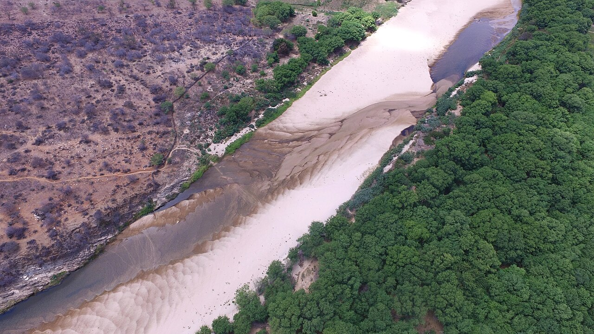
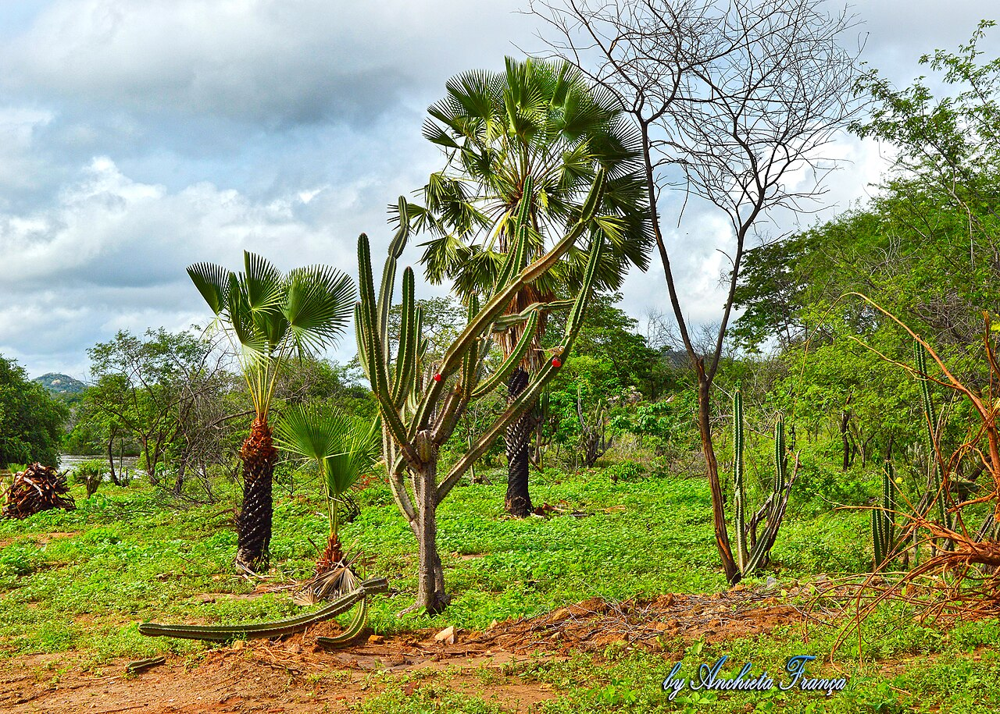
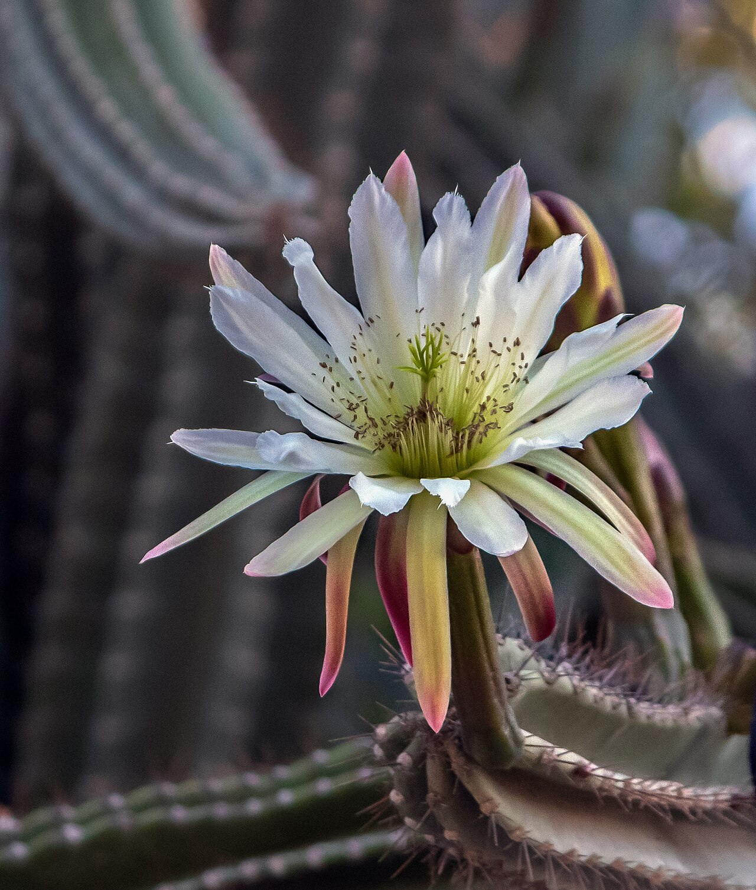
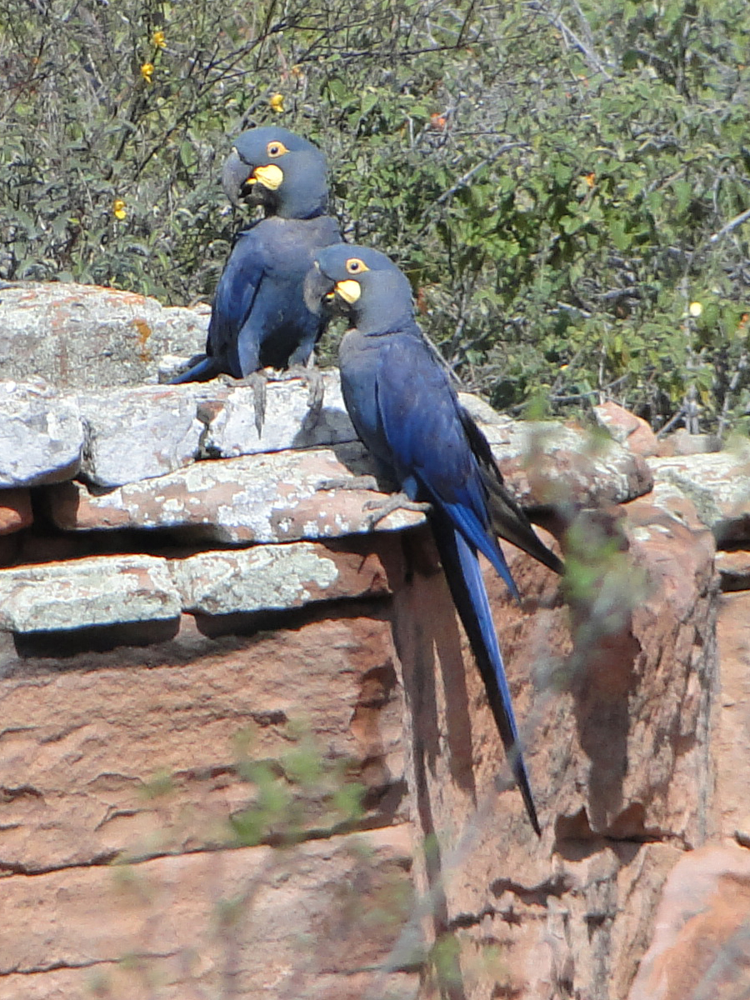
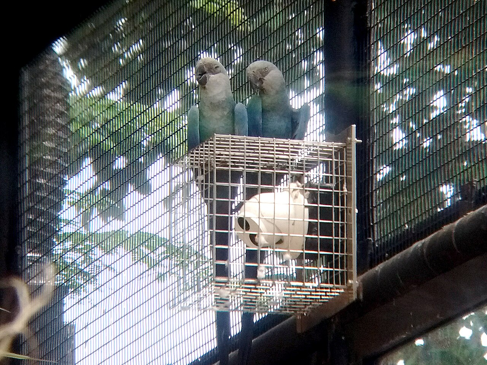
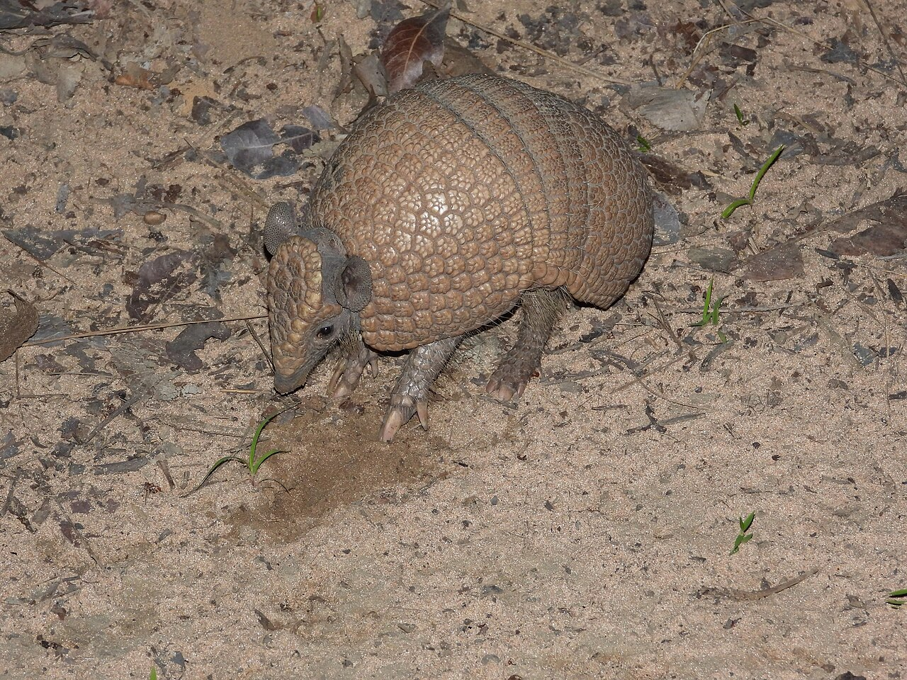
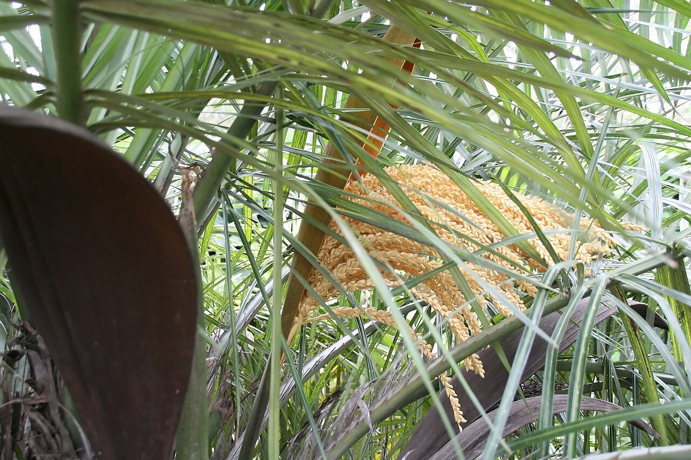
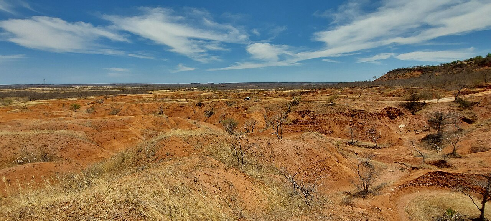
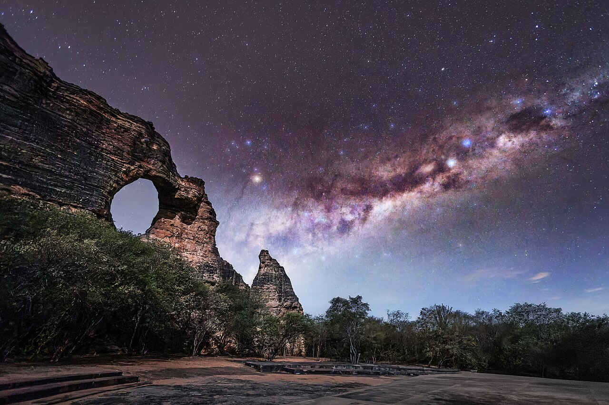
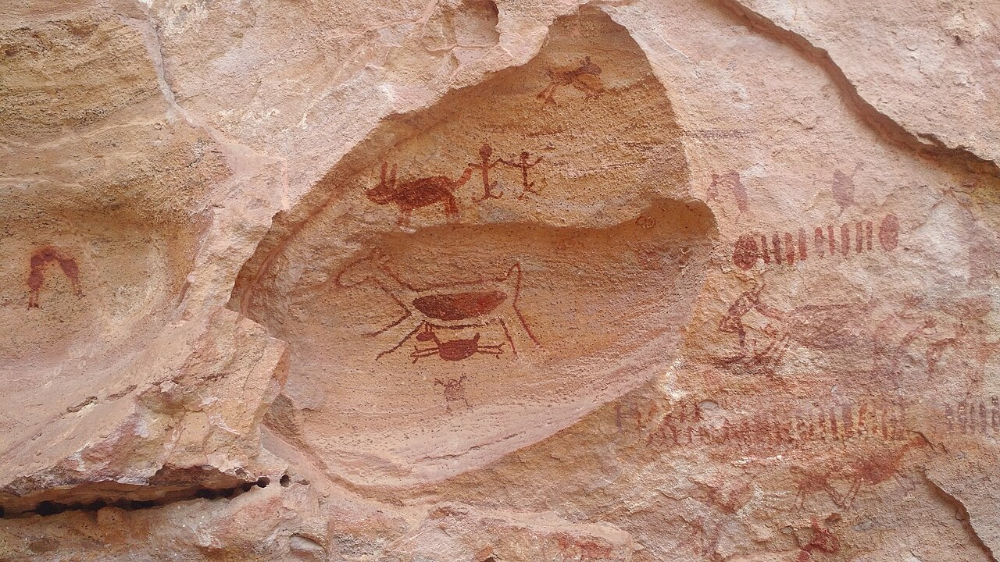

Brazil's great semi-arid heartland – the largest seasonally dry tropical forest in the Americas, and a biome found nowhere else on Earth. A land of thorn forest and cactus, of long drought and sudden green, and of some 28 million people who have learned to live with the dry.
Exclusively Brazilian≈ 845,000 km² · 11% of BrazilSemi-arid · seasonally dry forest~28 million peopleHighly endemic

The sertão in the dry season – an intermittent river run dry and the thorn forest stripped to pale bark and bare branches. This is the “white forest” that gives the biome its name.
Photo: Renato Augusto Martins, CC BY-SA 4.0, via Wikimedia Commons
Biome profile · At a glanceWhat the Caatinga is
The Caatinga is the semi-arid biome of north-eastern Brazil – a vast mosaic of dry forest, thorn scrub, cactus and rock that is found only in Brazil. It is the country's most overlooked biome and yet one of its richest: a living example of how forests, farmers and livestock share a landscape shaped by drought.
Extent
≈ 845,000
km² – about a tenth of Brazil
States it spans
10
the Northeast + northern Minas Gerais
People
~28 M
one of Earth's most populous drylands
Biome type
SDTF
seasonally dry tropical forest & scrub
Native cover left
~ half
the rest cleared or degraded
Strictly protected
< 10%
one of Brazil's least-protected biomes
In one sentence
The Caatinga is Brazil's only exclusively national biome – a uniquely Brazilian dryland of deciduous thorn forest and cactus that turns from grey to green with the rains, sustains tens of millions of people, and holds a biodiversity still being discovered even as it is lost.
Place and climateWhere it is, and the “white forest”
The Caatinga occupies the semi-arid interior of north-eastern Brazil – the sertão – reaching across ten states (Alagoas, Bahia, Ceará, Maranhão, Paraíba, Pernambuco, Piauí, Rio Grande do Norte and Sergipe, plus the north of Minas Gerais). It is hemmed by the Atlantic Forest to the east and grades into the Cerrado savanna to the west and south.
The Caatinga (in clay) within Brazil and South America – schematic locator.
A name that describes the land
“Caatinga” comes from the Tupi words ka'a (forest) and tinga (white) – the “white forest.” In the dry season most trees and shrubs drop their leaves at once, and the pale bark and bare branches give the landscape its bleached, silvery look. Then the rains come, and within days the same grey thicket flushes a brilliant green. This switch – deciduous drought-survival followed by explosive renewal – is the signature of the biome.

The same biome in the rains: within days of the first downpours the “white forest” greens and flowers. Far from the barren scrub of its reputation, a wet-season Caatinga is one of the most productive dry forests on Earth.
Photo: Anchieta França, CC BY-SA 4.0, via Wikimedia Commons
The Caatinga runs on two seasons, not four: a short, intense rainy season (the inverno, despite falling in the southern summer) and a long dry season (the verão) that can stretch most of the year. Its rivers reflect this – most are intermittent, flowing only after rain and vanishing into sand for the rest of the year, so the few perennial rivers and the underground water of the sedimentary basins carry enormous weight. Everything that lives here, people included, is organised around storing the wet months to survive the dry.
Semi-arid climate
Rainfall is low and erratic – broadly 300–800 mm a year, concentrated in a few months, with a long dry season and recurrent multiyear droughts. High temperatures and high evaporation make water, not heat, the limiting factor.
Crystalline and sedimentary ground
Much of the Caatinga sits on shallow soils over crystalline basement rock, where rain runs off fast and little is stored – one reason cisterns and water harvesting matter so much. Sandy sedimentary basins hold more groundwater.
A dryland, by definition
By the aridity index used for the world's drylands, the Caatinga is a true dryland – not a “presumed” one – which places it squarely within the global agenda on dryland forests, desertification and restoration (MMA, 2007).
BiodiversityLife in the dry forest
For decades the Caatinga was wrongly written off as poor and uniform. It is neither. It is a hotspot of plants and animals adapted to drought, with high endemism – many species live here and nowhere else, and new ones are still being described (Leal et al., 2003). Its flora is layered: cacti and bromeliads that store water, deciduous thorn trees that shed leaves to survive, and deep-rooted species that tap moisture far below the surface.
By the numbers usually cited, the biome holds on the order of 3,000 plant species – hundreds of them found nowhere else – alongside hundreds of species of birds, reptiles, amphibians, fish and mammals, with bees especially diverse (Leal et al., 2003). Its fauna is tuned to the rains: many reptiles and amphibians spend the dry season dormant and emerge to breed in a rush when the water comes. Two of its birds have become world symbols of both the biome's richness and its peril.
Umbuzeiro (Spondias tuberosa) – the “sacred tree of the sertão.” Photo: Fronteira, CC BY-SA 4.0

Mandacaru (Cereus jamacaru) in flower – folk signal that rain is near. Photo: Smailtn, CC BY-SA 4.0

Lear's macaw (Anodorhynchus leari) – endemic, and dependent on the licuri palm. Photo: Miguelrangeljr, public domain

Spix's macaw (Cyanopsitta spixii) – extinct in the wild, now being reintroduced. Photo: Evan Centanni, CC BY-SA 4.0

Three-banded armadillo (Tolypeutes tricinctus), the tatu-bola – the biome's flagship. Photo: Reuber Brandão, CC BY 4.0
Umbuzeiro Spondias tuberosa
An icon of the Caatinga – a deep, tuberous root system stores water through the drought, and its tangy umbu fruit feeds families and a growing local economy of pulp, jam and juice.
Mandacaru and the cacti Cereus jamacaru
Columnar cacti – mandacaru, xique-xique, facheiro – are living water towers and emergency fodder. The mandacaru in flower is a folk signal that rain is near.
The macaws Anodorhynchus leari · Cyanopsitta spixii
The Caatinga is the only home of Lear's macaw and of Spix's macaw – the latter extinct in the wild and now being reintroduced near Curaçá, Bahia. Their fate tracks the biome's own (Leal et al., 2003).
Three-banded armadillo Tolypeutes tricinctus
The tatu-bola, which rolls into a perfect ball, is endemic to Brazil's dry biomes and became a global emblem of the Caatinga as the 2014 World Cup mascot – a flagship for a threatened fauna.
Juazeiro Ziziphus joazeiro
One of the few trees that stays green through the dry season, the juazeiro is a living larder – shade, fruit and emergency fodder when nothing else is left – and a fixture of sertão life and song.
A fauna tuned to the rains
Snakes, lizards, frogs and a remarkable diversity of bees wait out the drought and erupt into activity with the first storms. Many are endemic, and the biome's reptiles and amphibians are still being inventoried (Leal et al., 2003).
Adapted to survive the dry
Caatinga life runs on a drought-and-renewal rhythm: trees drop their leaves to cut water loss, seeds and roots wait out the dry, and the whole system greens within days of rain. That same resilience is the foundation any restoration must build on – working with the biome's strategies rather than against them.
Live biodiversity dataThe Caatinga, as recorded by its naturalists
The figures above describe a biome; this dashboard shows it being documented in real time. It draws live from Caatinga Observations, a community-science project on iNaturalist where naturalists across the region upload and identify what they find. Every number here refreshes as new observations come in – a window onto how much of this “overlooked” biome is still being discovered.
The Caatinga is not a wilderness – it is home to around 28 million people, making it one of the most densely populated semi-arid regions on the planet. The culture of the sertão – its music, faith, foodways and deep knowledge of drought – is woven into the land. Most rural families live from rainfed smallholder farming, goats and sheep, and the gathering of forest products (Araújo Filho, 2013).
That culture is unmistakable: the vaqueiro in leather riding the thorn scrub, the rhyming literatura de cordel, the forró and baião of Luiz Gonzaga, and a cuisine built on goat, maize, beans and the umbu. It is also a culture of resourcefulness under scarcity – generations of knowledge about which plant feeds an animal in a drought, where water lingers, and when the mandacaru's bloom says the rains are coming. Any sustainable future for the biome is built on that knowledge, not around it.
Goats raised loose in the Caatinga – hardy browsers and the backbone of dryland livelihoods. The challenge is grazing that lets the forest renew. Photo: Vitoriano Jr., CC BY-SA 3.0Carnaúba (Copernicia prunifera), the “tree of life” – its wax is a global export and a standing-forest income. Photo: Tacarijus, CC BY 2.5

Licuri (Syagrus coronata) – food, oil and craft for people, and the staple food of Lear's macaw. Photo: David J. Stang, CC BY-SA 4.0
Goats, sheep and the dry pasture
Small ruminants are the backbone of dryland livelihoods here – hardy, mobile, and able to browse thorn forest. Managed well, grazing and trees coexist; managed badly, overgrazing strips the land (Araújo Filho, 2013).
Forest products and income
Umbu fruit, licuri and carnauba palms, native honey, medicinal plants and fibres bring cash from standing forest – making the living Caatinga worth more than the cleared one (MAPA, 2015).
Fundo de Pasto communities
In Bahia, traditional Fundo de Pasto communities hold and graze land collectively, combining crops, fruit-gathering, forestry and livestock into diverse, productive landscapes – a home-grown model of integrated dryland management (Araújo Filho, 2013).
Drought, water and migration
Recurrent drought has long driven hardship and out-migration. Community water harvesting – above all the rural cistern programmes – has transformed resilience for millions of households.
A landscape of people and trees together
Brazil's Fundo de Pasto communities are cited in FAO's own dryland-forestry work as an example of multifunctional landscape management – integrating agriculture, fruit-gathering, forestry and livestock to create diverse, productive landscapes that support biodiversity, maintain soil health and sustain rural livelihoods in the semi-arid. It is exactly the kind of integrated agrosilvopastoral practice the Programme works to scale.
ThreatsPressures on the biome
The Caatinga is being lost quietly. Roughly half of its native vegetation has already been cleared or heavily altered, and it remains one of Brazil's least-protected biomes (MMA, 2008). The drivers are familiar across the world's drylands – and they compound one another.
Deforestation and land conversion – for pasture and cropping, often by clearing and burning native dry forest.
Fuelwood and charcoal – the Caatinga supplies a large share of the Northeast's woodfuel and charcoal, much of it cut unsustainably (MMA, 2008).
Overgrazing – too many animals on fragile pasture, removing the young trees that would renew the forest.
Desertification – in the worst-hit areas, degradation tips into near-irreversible land collapse (MMA, 2007).
Climate change – longer, harsher droughts and rising temperatures push an already water-limited system towards its edge.
The desertification nuclei
Decades of pressure have created recognised “desertification nuclei” (núcleos de desertificação) – pockets where soils, vegetation and productivity have largely broken down. They are the Brazilian face of a global problem (MMA, 2007).
Desertification nucleus
State
Gilbués
Piauí
Irauçuba
Ceará
Seridó
Rio Grande do Norte & Paraíba
Cabrobó
Pernambuco
The classic desertification nuclei of the Brazilian semi-arid. Other severely degraded areas exist across the biome; mapping and boundaries vary by study.

Land in the process of desertification – where overuse, erosion and drought strip the soil and vegetation past the point of easy recovery. These are the worst-case end of the same pressures acting across the biome.
Photo: A. Duarte, CC BY-SA 2.0, via Wikimedia Commons
Why protection lags
Because the Caatinga was long dismissed as low-value scrub, it attracted little conservation investment: only a small fraction sits in strictly protected areas, and much of what remains is fragmented across private land. Closing that gap – through protected areas, sustainable use and restoration on working land – is the central challenge.
Restoration and sustainable useLiving with the dry – and bringing it back
The Caatinga does not need to be abandoned to be saved. Its drought-renewal biology makes it highly regenerable: protect the soil and the seed source, ease the grazing pressure, and the white forest comes back (Leal et al., 2003). The most effective approaches pay people to keep the forest standing.
Farmer-managed regeneration
Protecting and pruning the natural regrowth that sprouts from living stumps and seedbanks – the cheapest, fastest way to bring back dryland forest, proven across the world's drylands.
Agroforestry and agroecology
Keeping and planting trees within farms and pastures – shade, fodder, fruit and soil protection that make production more resilient, not less, under drought.
Native value chains
Umbu, licuri, carnauba wax, native (stingless-bee) honey and medicinal plants turn a standing Caatinga into income – the economic case for conservation (MAPA, 2015).
Seed networks and nurseries
Community seed collection and native-seedling nurseries supply the raw material for restoration at scale, and keep the biome's genetic diversity in local hands.
Water harvesting
Rooftop and field cisterns and small water structures underpin both households and restoration – the foundation that lets families invest beyond mere survival.
Land rights and protected areas
Secure collective tenure (Fundo de Pasto) and expanding protected areas – from Serra da Capivara National Park to Catimbau and Boqueirão da Onça – anchor long-term stewardship.
Serra da Capivara – deep time in the dry forest
In Piauí, Serra da Capivara National Park – a UNESCO World Heritage Site – protects one of the Americas' greatest concentrations of prehistoric rock art amid Caatinga forest. It is a reminder that people and this dry land have shared a story for many thousands of years, and that conservation here protects culture as well as nature.

Serra da Capivara National Park, Piauí – canyons and dry forest protected together. Well-managed protected areas anchor the long-term recovery of the biome. Photo: Thiago Marcel Campi, CC BY-SA 4.0, via Wikimedia Commons
Technologies and approachesHow to manage the Caatinga sustainably
Brazil has spent decades building a practical, field-tested toolkit for using the Caatinga without destroying it. The catalogue below is drawn from the technical literature now held in this platform's evidence base – the MMA's proposal for sustainable pastoral management (Araújo Filho), Embrapa Semiárido's production systems, the national forest statistics and community forest-management plans, MAPA's good-practice guides for native value chains, and the conservation and desertification atlases. Together they describe seven families of technology and approach.
The founding principle
Sustainable Caatinga management works the native vegetation – it does not replace it. Techniques that swap the biome's biodiversity for an exotic-grass monoculture are explicitly excluded: the goal is to raise the productivity of the standing dry forest for fodder, wood, fruit and water, while keeping its trees, soil and seedbank intact (Araújo Filho, 2013).
The three golden rules of Caatinga manipulation
Whatever the technique, the Brazilian research consensus is that sustainability holds only if three thresholds are respected (Araújo Filho, 2013):
Keep the canopy – preserve up to around 400 trees per hectare (≈ 40 percent tree cover) for biodiversity, shade, rainfall interception, organic matter and erosion control.
Leave more than you take – harvest at most 60 percent of the available forage, so ≥ 40 percent stays to protect soil, feed the seedbank and buffer drought.
Protect the water lines – keep the riparian vegetation intact along the whole drainage network, as ecological corridor, wildlife refuge and guardian of springs and water quality.
1 · Manipulating the native vegetation for fodder
The pastoral heart of the toolkit: three low-cost ways to lift forage from a standing Caatinga without clearing it – chosen according to the site's ecological potential (Araújo Filho, 2013).
Rebaixamento coppice and sprout management
Manually cutting back forage trees and shrubs to bring browse within animals' reach and extend green leaf into the dry season. Best where around 70 percent of the woody species are palatable (sabiá, jurema, mororó, quebra-faca…). Raises available forage to around 4× native.
Raleamento selective thinning
Selectively removing woody plants to cut shade and release the grass-and-herb layer – never with fire, keeping forage, deep-rooted and timber species. Lifts forage to around 6× native and slashes drought-year losses from around 80 percent to around 22 percent.
Enriquecimento enrichment seeding
For already-degraded land that has lost its herb layer: minimum-tillage reseeding with adapted native and/or hardy forage species, often with phosphate correction. Delivers the highest carrying capacity of any treated Caatinga – a 1:2.5 cost:benefit at Embrapa Sobral.
Treatment
Available forage
Carrying capacity
Indicative outcome
Native Caatinga (baseline)
1×
very low
cattle lose weight through the long dry season
Rebaixada (coppiced)
~4×
5.0 ha/head (cattle)
~60% of biomass from the woody layer; best with goats
Raleada (thinned)
~6×
3.5 ha/head (cattle)
up to +800% live-weight per ha/yr; drought loss only ~22%
Enriquecida (enriched)
highest
1.1 cattle · 10 small-stock /ha/yr
up to 172 (cattle) / 120 (goats) / 180 (sheep) kg live-weight/ha/yr
Indicative figures after Araújo Filho et al. (2002), as compiled in the MMA proposal for sustainable pastoral management of the Caatinga. Real responses vary by ecological site – not every site responds to thinning.
2 · Integrated agrosilvopastoral systems
Whole-farm models that combine crops, trees and livestock with the strategic use of the Caatinga – the integrated landscapes the dryland-forests agenda exists to scale (Araújo Filho, 2013).
SAF-Sobral
Embrapa's flagship agrosilvopastoral layout: 20% cropping (alley farming) · 60% managed pasture · 20% legal reserve (woodlot or apiary), from 3 ha up. Maize yields ran 79% above the state average with far steadier output (CV 19.8% vs 75.5%) – on the same plot every year, with no shifting cultivation.
CBL system Caatinga · buffel · leucaena
Embrapa Semiárido's three-part year: native Caatinga grazed in the rains, a buffel-grass pasture, and a leucaena protein bank for hay/silage and browse – sequencing feed across the wet and dry seasons.
SIPRO system
Maximises use of the tree Caatinga in the rains, with dry-season supplementation from sorghum/maize stover and a buffel reserve for ewes/does around lambing – a production system tuned to the herd's calendar.
Recaatingamento IRPAA · Fundo de Pasto
A community-led model in Bahia's Fundo de Pasto: conserving and recomposing the Caatinga, contextualised environmental education, income from sustainable agro-extractivism (umbu, passion-fruit), and stocking rates set to cancel overgrazing.
3 · Sustainable forest management for wood energy
The Northeast runs heavily on Caatinga fuelwood and charcoal – the issue is not whether the forest is cut but how. Legal, planned management replaces clear-cutting with rotation (MMA, 2008).
Sustainable Forest Management Plans (PMFS) – harvesting on an approximately 15-year cutting cycle across rotating plots, so each area regrows before it is cut again; observed sustainable yields ranged around 38–203 stacked-m³ (st) per hectare (MMA, 2008).
Community and family forest management – the national programme (PAMFCF) that puts planned wood production, legalised through associations, in the hands of settlements and traditional communities as a source of legal income.
Legal-reserve and settlement management – managing the mandatory on-farm forest reserve productively rather than leaving it idle or clearing it.
4 · Native value chains and sociobiodiversity
Making the standing Caatinga worth more than the cleared one – through organic, certified, sustainable harvesting of its native products, governed by Brazil's organic-agriculture law (Brasil, 2003) and the MAPA good-practice guides held in the evidence base (MAPA, 2015).
Carnaúba Copernicia prunifera
The “tree of life” – sustainable, organic harvesting of carnaúba wax and fibre with good practices that keep the palm stands productive for generations (MAPA, 2015).
Licuri Syagrus coronata
A keystone palm – its nut feeds people, livestock and the endangered Lear's macaw alike. Organic extractivism good-practice turns it into oil, food and craft income (MAPA, 2015).
Caroá and fibres Neoglaziovia variegata
A native bromeliad fibre – sustainably harvested for cordage, crafts and textiles, a classic non-timber product of the dry forest (MAPA, 2015).
Umbu, honey and beekeeping
Umbu pulp and jam, native and stingless-bee honey, and apiaries sited in the legal reserve – fast-return enterprises that reward keeping the forest standing.
5 · Soil, water and combating desertification
“Living with the semi-arid” (convivência com o semiárido) rather than fighting it – the approach that underpins recovery in the desertification nuclei.
Water harvesting and storage – rooftop and field cisterns and small structures, and the Programa Água Doce for community desalination – the foundation that lets families invest beyond survival.
Soil and erosion control – permanent ground cover, organic-matter return, contour structures and the riparian-buffer rule that keeps water and topsoil on the land.
Recovering the desertification nuclei – targeted restoration of Gilbués, Irauçuba, Seridó and Cabrobó, guided by the national Atlas of areas susceptible to desertification (MMA, 2007).
6 · Conservation and protected areas
Sustainable use on working land has to be matched by a protected core – still the Caatinga's weakest link.
Expanding protected areas on the priority-area maps – closing the gaps identified in the SNUC representativeness analysis for the biome.
Sustainable-use and community reserves – Extractive Reserves (Resex), Sustainable-Development Reserves (RDS), agro-extractivist settlements (PAE) and private reserves (RPPN) that pair conservation with livelihoods.
Corridors and riparian networks – using the protected riparian strips as the connective tissue that links fragments across private land.
7 · The enabling environment
The technologies exist; the Brazilian workshops are blunt that adoption depends on extension, finance and a workable licence. These are the levers that take good practice to scale.
Participatory extension
Revitalised, integrated rural extension; farmer-to-farmer (camponês–camponês) methods, demonstration units and multiplier training – with traditional knowledge and youth built in.
Fit-for-purpose finance
Credit lines matched to the long forest cycle – PRONAF-Floresta, PRONAF-Agroecologia and FNE-Verde – plus Payment for Environmental Services (PSA) and Bolsa Verde to reward stewardship.
A workable licence
A single, simplified, declaratory licence built on the Rural Environmental Registry (CAR), with fee exemptions for family farmers and indigenous, quilombola and traditional communities – so land is not left idle awaiting permits.
Organisation and markets
Community associations and cooperatives, sanitary inspection that fits the semi-arid reality, and value-chain support – integrate the whole approach with agroecology.
In one line
Keep around 40 percent of the trees, take no more than 60 percent of the forage, guard the water lines – then thin, coppice or enrich the standing Caatinga, fold it into a crop–tree–livestock system, add native value chains and water security, and back it with extension, fair credit and a simple licence. That is sustainable management of the white forest.
The DFSA connectionWhy the Caatinga matters here
The Caatinga sits outside the eleven country projects of the GEF-7 DSL-IP – but it is, in every other sense, exactly the kind of landscape this platform exists for: a dryland forest and agrosilvopastoral system under pressure, where restoration must reconcile trees, livestock and livelihoods. Its lessons travel.

Millennia-old rock paintings at Serra da Capivara – among the oldest evidence of human presence in the Americas. People and the Caatinga have shared this dry land for a very long time; safeguarding it is as much cultural as ecological. Photo: Josias de Melo Xavier, CC BY-SA 4.0, via Wikimedia Commons
01
A textbook dryland
Semi-arid, deciduous, fire- and drought-shaped – the Caatinga is a living case study in dryland forest and agrosilvopastoral management and Land Degradation Neutrality.
02
Brazil at the table
Brazil is a member of the COFO Working Group on Dryland Forests – and held a Vice-Chair – bringing Caatinga experience into the global dryland-forests agenda.
03
A model worth sharing
Fundo de Pasto communities feature in FAO dryland-forestry work as an example of integrated, multifunctional landscape management – ready for South-South exchange.
04
South-South learning
The Caatinga, the Sahel and the Miombo–Mopane face the same questions – grazing with trees, native value chains, regeneration – and can learn from one another.
This profile is a knowledge and outreach summary compiled for DFSA from widely cited public sources. Figures for the Caatinga – its area, population, remaining cover and protection – vary by source and mapping method; the values here are rounded approximations meant for orientation, not official statistics.
The documents behind the management section
The sustainable-management catalogue is grounded in a library of Brazilian technical references – from the MMA, Embrapa, MAPA, the National Forest Programme and a UNDP conservation project – now held with this profile and downloadable below. Each contributes a different piece of the picture.
The core source. The full silvopastoral toolkit – CBL, SIPRO, Recaatingamento, rebaixamento, raleamento, enriquecimento, SAF-Sobral – the three golden rules, and the financing/extension/licensing barriers to scale.
The authoritative scientific reference on the biome's ecology, biodiversity, endemism and conservation – the basis for the “life” and regeneration narrative.
Photographs on this page are reproduced from Wikimedia Commons under the Creative Commons or public-domain licences shown. Each remains the work of its author; no endorsement is implied.
Araújo Filho, J. A. de. (2013). Manejo pastoril sustentável da Caatinga. Projeto Dom Helder Câmara. PDF
Brasil. (2003). Lei nº 10.831, de 23 de dezembro de 2003: Dispõe sobre a agricultura orgânica e dá outras providências. Diário Oficial da União.
Leal, I. R., Tabarelli, M., & Silva, J. M. C. da (Eds.). (2003). Ecologia e conservação da Caatinga. Editora Universitária da UFPE. PDF
Ministério da Agricultura, Pecuária e Abastecimento [MAPA]. (2015). Cadernos de boas práticas para o extrativismo sustentável orgânico: Carnaúba, caroá e licuri. MAPA. PDF
Ministério do Meio Ambiente [MMA]. (2007). Atlas das áreas susceptíveis à desertificação do Brasil. MMA. PDF
Ministério do Meio Ambiente [MMA]. (2008). Estatística florestal da Caatinga (Programa Nacional de Florestas). MMA. PDF